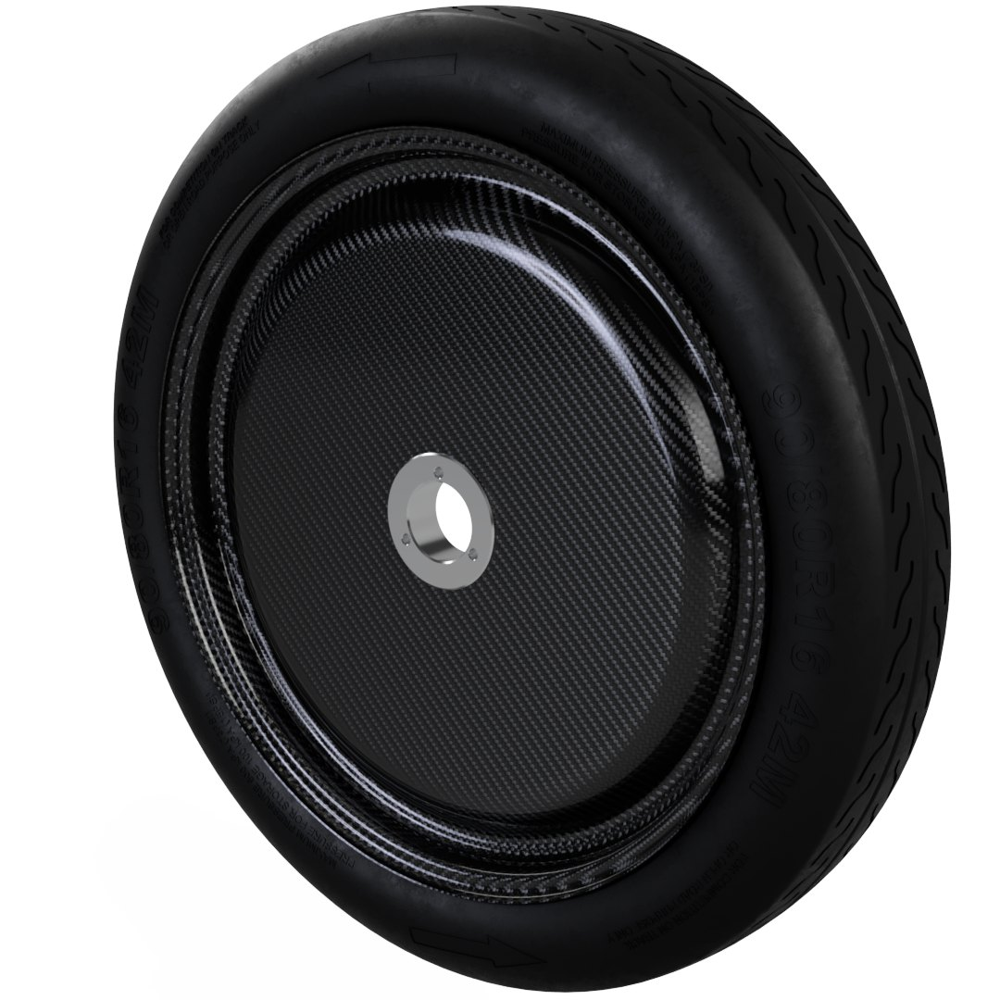
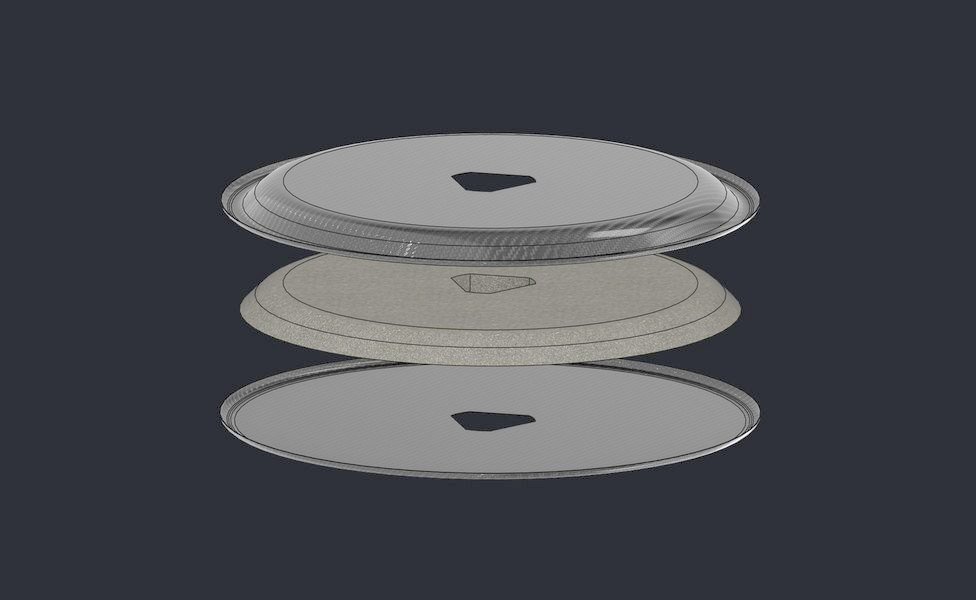
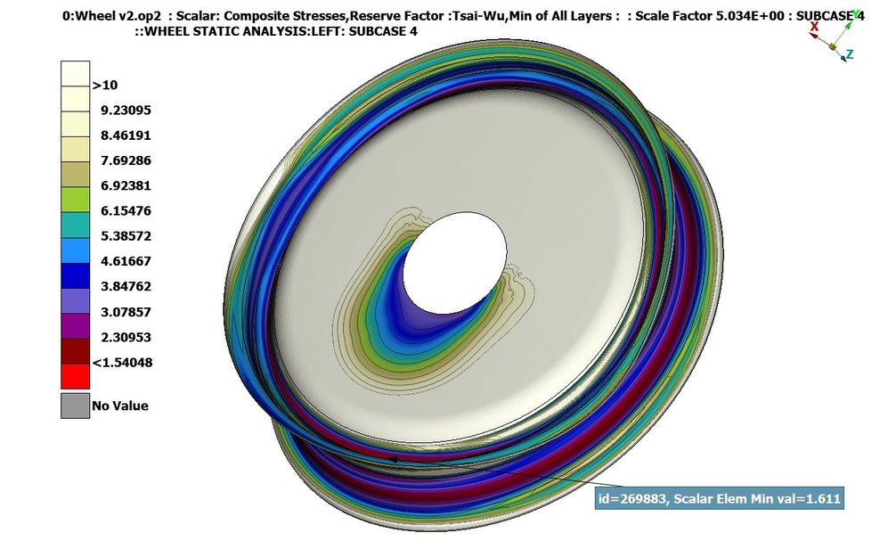
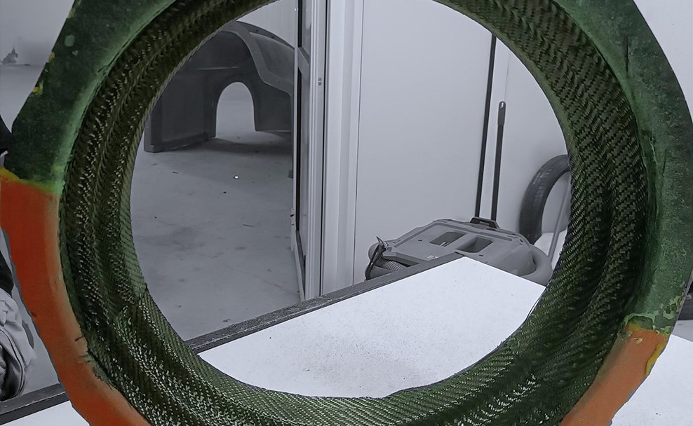
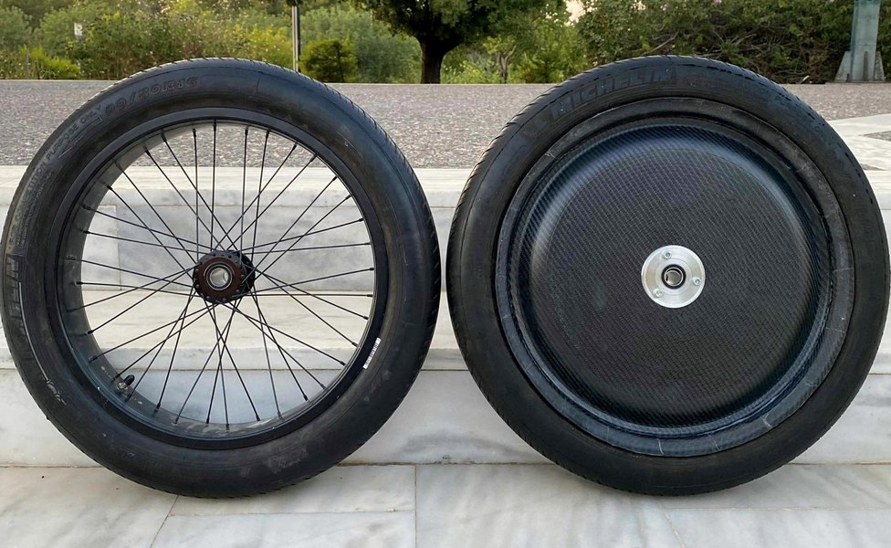

TUCer / Diploma thesis · Technical University of Crete
CFRP Composite Wheel.
A tubeless carbon-fibre wheel with a one-piece rim, replacing a two-piece glued rim — from RVE-based composite modelling through three iterations of the manufacturing tooling to instrumented physical validation.

FIG. 01 — CFRP composite wheel, TUC diploma thesis
Design
The old wheel was a two-piece rim glued together, requiring an inner tube and concentrating load in the adhesive joint. The new rim is one piece and tubeless: Michelin's 3.00 B rim geometry (chosen over the alternative for a lower rolling-resistance coefficient at the competition's 35 km/h average speed) retains the tyre at operating pressure with no tube at all.
The sidewall replaces spokes with a foam-core CFRP sandwich — evening load distribution, cutting aerodynamic drag, and resisting bending and buckling. The hub is deliberately simple: a two-piece triangular center bolts to a permanent adapter left on the vehicle, which carries the brake disc and bearings. Removing the wheel no longer disturbs the brake caliper.

Materials & FEA

The laminate — twill 2×2 T300 carbon fibre in Resoltech 1050/1058s infusion epoxy — was characterised by representative volume element (RVE) homogenisation in ANSA/EPILYSIS: six strain-controlled load cases on a periodic microstructure model, yielding orthotropic properties (E1 ≈ E2 ≈ 52.4 GPa for the balanced weave, fibre volume fraction 0.454) fed into ply-level FEA with per-ply Tsai–Wu tracking.
Five load cases were simulated per candidate — four static (weight, cornering, braking, internal pressure) plus a transient pothole impact — and 9 candidate layups were scored on margin, mass and stiffness (full breakdown below). The winner, a 20 mm-core layup at 635 g, held a minimum Tsai–Wu reserve factor of 1.54 across all five subcases; thinner or coreless variants either failed outright or scored far lower.
Nine-candidate layup study
Any candidate whose minimum reserve factor falls below 1 in any subcase is rejected outright and scores 0%; the rest are ranked, on the maximum reserve factor and normalised to the selected candidate at 100%, by S = 3·max(RF) / (m³·max(u)1.5), with mass m in grams and displacement u in millimetres. Holding reserve factor constant, a 10% mass increase costs about 24.9% of the score; the same 24.9% needs 21% more displacement.
| Code | Description | Mass (g) | Min RF | Max disp. (mm) | Score |
|---|---|---|---|---|---|
| R6W6 | 20mm core wall | 635 | 1.540 | 6.75 | 100% |
| R6W6 | 20mm core wall + 2mm core rim | 776 | 2.479 | 5.96 | 93% |
| R5W6 | 20mm core wall | 590 | 1.203 | 7.47 | 85% |
| R6W8 | 20mm core wall | 659 | 1.211 | 6.45 | 76% |
| R6W6* | 20mm core wall + LR | 660 | 1.592 | 7.70 | 75% |
| R6W6 | 15mm core wall | 596 | 1.521 | 10.67 | 61% |
| R6W6 | 10mm core wall | 557 | 1.485 | 16.45 | 39% |
| R6W6 | No core | 478 | 0.147 | 363.60 | 0% |
| R4W6 | 20mm core wall | 545 | 0.894 | 20.84 | 0% |
Sorted by score, the function's own ranking. The bottom two failed outright — reserve factor below 1 in at least one subcase — and score zero by definition; they are published, not omitted. Five load cases per candidate: four static (weight, cornering, braking, internal pressure) plus a transient pothole impact, run as subcases 1–5. Subcase 5 is the impact case; the source labels the static cases 1–4 without mapping them to named loads. FIG. 03 above plots subcase 4 (min element 1.611); the table's governing minimum, RF 1.540, falls in subcase 3. LR is the source label for the R6W6* variant; its expansion is not documented in the thesis text.
View full per-subcase data
| Code | Description | Mass (g) | Rejected | Reserve factor (Tsai–Wu) by subcase | Max displacement (mm) by subcase | Score | ||||||||
|---|---|---|---|---|---|---|---|---|---|---|---|---|---|---|
| S1 | S2 | S3 | S4 | S5 | S1 | S2 | S3 | S4 | S5 | |||||
| R6W6 | 20mm core wall | 635 | No | 2.033 | 1.863 | 1.540 | 1.611 | 2.036 | 2.166 | 2.289 | 6.748 | 5.667 | 2.152 | 100% |
| R6W6 | 20mm core wall + 2mm core rim | 776 | No | 2.869 | 2.841 | 2.479 | 2.752 | 2.875 | 1.446 | 1.568 | 5.963 | 4.253 | 1.440 | 93% |
| R5W6 | 20mm core wall | 590 | No | 1.613 | 1.466 | 1.203 | 1.313 | 1.614 | 2.685 | 2.863 | 7.467 | 6.272 | 2.686 | 85% |
| R6W8 | 20mm core wall | 659 | No | 1.618 | 1.470 | 1.211 | 1.502 | 1.620 | 2.489 | 2.663 | 6.446 | 5.074 | 2.485 | 76% |
| R6W6* | 20mm core wall + LR | 660 | No | 2.084 | 1.911 | 1.592 | 1.632 | 2.087 | 1.883 | 1.968 | 7.704 | 6.780 | 1.868 | 75% |
| R6W6 | 15mm core wall | 596 | No | 2.026 | 1.857 | 1.521 | 1.594 | 2.027 | 2.445 | 2.576 | 10.670 | 8.862 | 2.471 | 61% |
| R6W6 | 10mm core wall | 557 | No | 2.014 | 1.848 | 1.485 | 1.548 | 2.019 | 3.048 | 3.200 | 16.450 | 13.130 | 3.053 | 39% |
| R6W6 | No core | 478 | Yes | 1.566 | 1.379 | 0.147 | 0.180 | 0.899 | 39.330 | 43.850 | 363.60 | 280.10 | 77.50 | 0% |
| R4W6 | 20mm core wall | 545 | Yes | 1.222 | 1.101 | 0.894 | 1.063 | 1.223 | 10.434 | 12.039 | 20.837 | 12.792 | 3.586 | 0% |
Source: analysis.tex, TUCer diploma thesis, table tab:results_table and its scoring-function block, verbatim.
Manufacturing
Tooling went through three iterations. The first mould, machined from MDF, proved the process was feasible in the lab but suffered from moisture sensitivity, heat deformation, and resin waste. The second, machined from UHMWPE on a CNC router, released cleanly without release agents but couldn't be fully sealed for the rim's more complex geometry. The third and final rim mould — a two-piece gelcoat–glass-fibre–vinylester composite cast from a CNC-machined foam positive — produced three rims with no deformation or wear.
Parts were built by vacuum infusion (VARTM): 18 fabric pieces for the rim and 6 plus a core for the sidewall, laid up with the mould's smooth face at the tyre interface and its peel-ply rough face used as the bonding surface, needing no sanding. Each part cured for 16 hours at 60°C in a purpose-built oven — see the curing oven case study — then the rim and sidewall were bonded with epoxy and post-cured.

Results & validation

The finished wheel assembly weighs 2841 g against the old wheel's 3515 g — a 19.2% reduction (674 g), with the wheel structure alone down 37.9% and the hub down 48.6%. At vehicle level, that's roughly 2.7 kg saved across four wheels.
Physical validation ran on a custom-built instrumented test bench: a pressure test held +20% over operating pressure with no cracks, a fatigue test ran 40 kg at max speed for a duration equal to three race lengths with no damage, and comparative energy testing recorded 44.3% and 59.1% lower electrical energy per distance for the new wheel in the loaded scenarios — applied loads differed between the two wheels, so these are qualified bench comparisons — with rotational inertia consistently 11–47% lower across all four test scenarios.